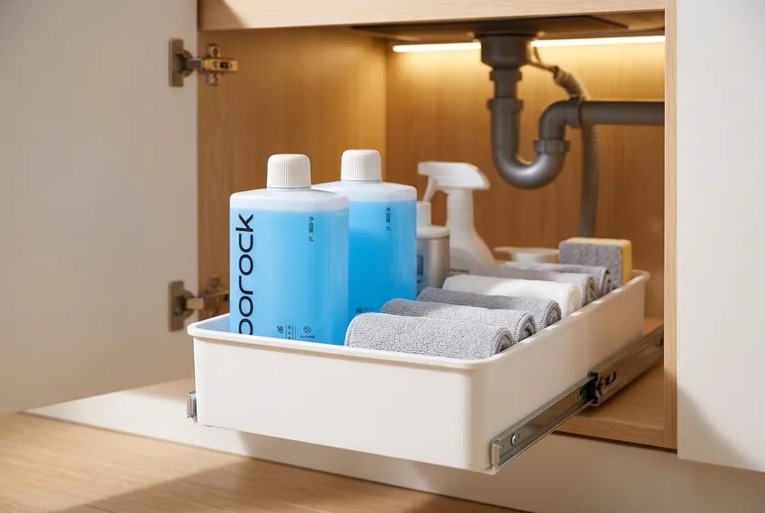
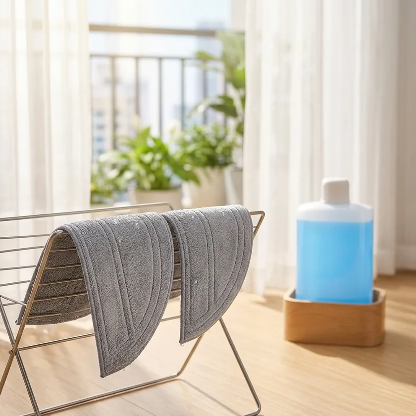
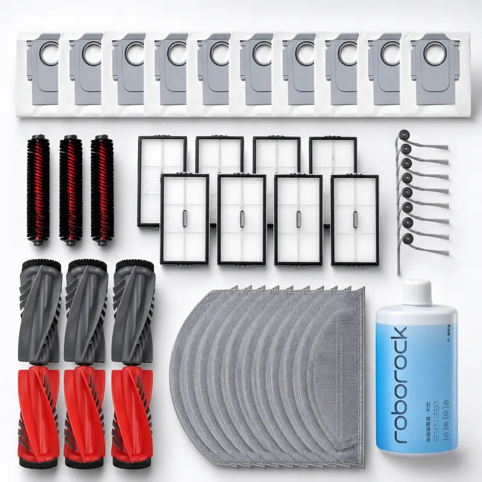

로보락 (Roborock)
로보락 전용 세제 1L 리필·온수 세척 냄새 관리｜1병·2병 복수할인 비교
글·구성: 제이상점 · 기종별 1:1 호환 실물 점검 · 교체 주기 비교표 · 스마트스토어 패키지 안내

핵심 관리 · 선택 체크포인트
- 저녁 식사 후 주방 바닥에 남은 미세한 유분기나 로보락 온수 물걸레 세척 스테이션에서 올라오는 꿉꿉한 냄새 때문에 고민하시는 경우가 많습니다.
- 로보락 정품 클리너 1L 정량 투입과 스테이션 배관·노즐 관리 포인트: 로보락 도크 세제통(자동 투입 카트리지)이나 정수통에 세정제를 보충할 때는 반드시 해당 기종 공식 설명서가 안내하는 정량 비율을 지켜야 합니다.
- 투입 방식별 리필 점검 & 싱크대 하부장 보관 기준표: 우리 집 로보락 모델의 세제 투입 구조와 보관 동선에 맞춰 아래 세 가지 항목을 점검해 두시면 냄새와 거품 트러블을 미리 예방할 수 있습니다.
- 우리 집 물걸레 가동 빈도별 1L 1병 vs 2병 복수구매할인 선택 설계: 제이상점 로보락 정품 전용 클리너 1L 페이지는 용량 1L-1병과 용량 1L-2병(복수구매할인) 두 가지 직관적인 옵션으로 운영됩니다.
- 특히 주방 바닥을 닦은 반원형·원형 물걸레 패드는 유분기와 습기가 남지 않도록 세척 후 통풍 선반에서 바짝 말려 예비 패드와 교대 장착해 주면 스테이션 쉰내 걱정을 크게 덜 수 있습니다. 최신 옵션 가격과 복수구매할인 조건은 제이상점 로보락 정품 전용 클리너 1L 상세페이지에서 확인해 보세요.
실물 부품 디테일 · 관리 구성 이미지




부품 규격 · 점검 기준표
| 집중 점검 항목 | 자동 세제통 · 정수통 사용 기준 | 냄새·거품 예방 실천 포인트 |
|---|---|---|
| 자동 투입 카트리지 | 전용 카트리지에 원액 보충 후 도크가 자동 희석 | 리필 전 주입구 굳은 세제 자국을 젖은 천으로 닦고 밀착 장착 |
| 정수통 직접 희석 | 기종 설명서 권장 비율에 맞춰 정수통에 정량 투입 | 권장 비율 초과 투입·타 세제 혼합 금지(거품·미끄러움 방지) |
| 1L 슬림 용기 보관 | 직사각형 슬림 1L 용기 1병 · 2병 단위 보관 | 직사광선을 피한 싱크대 하부장 슬라이딩 선반에 세워 보관 |
💡 교체 주기가 겹치는 필터·브러시·물걸레·더스트백은 단품 배송비를 여러 번 내기보다 로보락 세제 기간별 세트(3개월·6개월·1년)로 미리 구비해 두면 물세척 후 24시간 교대 건조까지 끊김 없이 관리할 수 있습니다.
자주 묻는 질문 (FAQ)
Q. 온수 물걸레 세척을 쓰는데도 바닥이 살짝 미끄럽거나 꿉꿉한 냄새가 남으면 무엇부터 점검해야 하나요?
A. 먼저 기종 설명서 기준보다 세정제를 과하게 투입하지 않았는지와 오수통·세척판 하단에 기름때가 쌓이지 않았는지 확인해 보세요. 정량 투입으로 맞춘 뒤에도 냄새가 남는다면 물걸레 패드를 분리해 통풍이 잘되는 그늘에서 완전히 말리고 마른 예비 패드와 교대 장착해 주면 잔여 습기 냄새를 줄이는 데 도움이 됩니다.
Q. 로보락 전용 세제 1L의 자동 투입 카트리지 규격과 관리 기준은 무엇인가요?
A. 전용 카트리지에 원액 보충 후 도크가 자동 희석 규격을 사용하며, 리필 전 주입구 굳은 세제 자국을 젖은 천으로 닦고 밀착 장착 기준으로 점검·교체하면 청소 효율을 안정적으로 유지할 수 있습니다.
Q. 로보락 전용 세제 1L의 정수통 직접 희석 규격과 관리 기준은 무엇인가요?
A. 기종 설명서 권장 비율에 맞춰 정수통에 정량 투입 규격을 사용하며, 권장 비율 초과 투입·타 세제 혼합 금지(거품·미끄러움 방지) 기준으로 점검·교체하면 청소 효율을 안정적으로 유지할 수 있습니다.
제이상점 1:1 검수 추천 패키지 · 구매 안내

함께 많이 찾는 보충 구성
대표 구성 참고가 70,100원대 (옵션·쿠폰별 스마트스토어 결제 화면 기준)
1년세트1년세트｜호환세제→정품세제 업그레이드6개월세트6개월세트｜호환세제→정품세제 업그레이드3개월세트
☑️ 주문 전 확인해 두면 좋은 제이상점 안심 포인트
· 기종별 1:1 전용 규격 검수: 모델명·연식에 맞는 호환·정품 구성을 검수해 오주문 불안을 줄였습니다.
· 해외직배송 미리 주문 팁: 중국 구매대행·해외직배송 상품이므로 마지막 여분 1개를 꺼내 쓰는 시점에 개인통관고유부호와 함께 여유 있게 주문해 두시면 훨씬 경제적인 비용으로 끊김 없이 교체하실 수 있습니다.
· 기종별 1:1 전용 규격 검수: 모델명·연식에 맞는 호환·정품 구성을 검수해 오주문 불안을 줄였습니다.
· 해외직배송 미리 주문 팁: 중국 구매대행·해외직배송 상품이므로 마지막 여분 1개를 꺼내 쓰는 시점에 개인통관고유부호와 함께 여유 있게 주문해 두시면 훨씬 경제적인 비용으로 끊김 없이 교체하실 수 있습니다.
📖 더 많은 가정 내 사용 스토리와 상세 후기가 궁금하시다면
📱 네이버 블로그 모바일 원문 보기 ↗